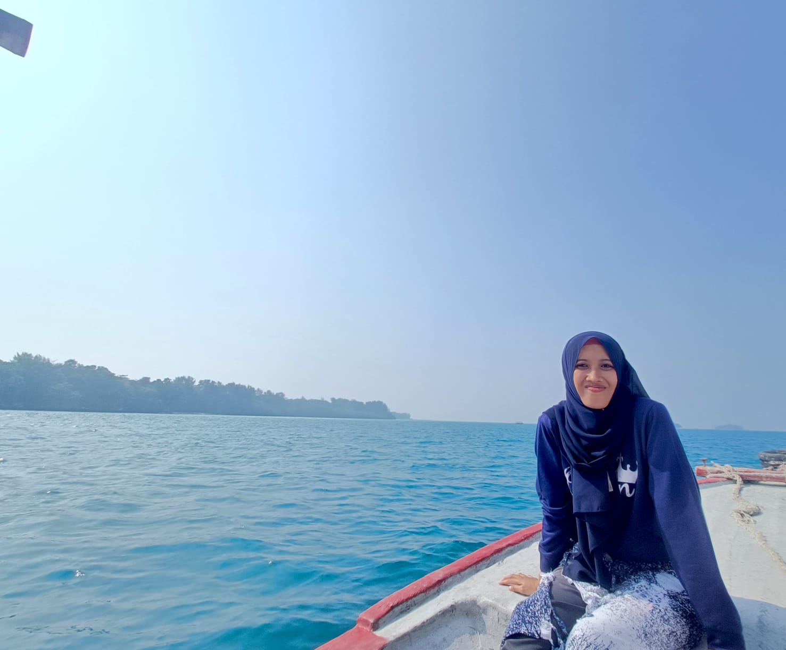

Saya adalah seseorang yang memiliki ketertarikan pada teknologi informasi, pendidikan, pengembangan sistem, dan inovasi digital.

PROFIL
Saya memiliki minat dalam bidang teknologi informasi, khususnya pengembangan perangkat lunak, jaringan, kecerdasan buatan, data science, serta transformasi digital.
Saya juga memiliki ketertarikan dalam bidang pendidikan, penelitian, dan pengabdian kepada masyarakat melalui pemanfaatan teknologi.
KEAHLIAN
HTML, CSS, Java, PHP, JavaScript dan pengembangan aplikasi web.
Machine Learning, Generative AI, Natural Language Processing dan Data Science.
Jaringan komputer, server, cloud computing, keamanan jaringan dan infrastruktur TI.
Data analysis, data visualization, machine learning dan text mining.
PENGALAMAN
Melaksanakan kegiatan pembelajaran, penelitian, pengembangan teknologi, serta pengabdian kepada masyarakat.
Mengembangkan aplikasi dan melakukan analisis terhadap kebutuhan sistem teknologi informasi.
Melakukan penelitian dan pengembangan solusi berbasis teknologi informasi.
KONTAK
Jika ingin berdiskusi mengenai teknologi, penelitian, pendidikan, atau pengembangan sistem informasi, silakan hubungi saya.
nilovar.asyiah@unpam.ac.id
085778435378
Ciseeng, Bogor, Jawa Barat